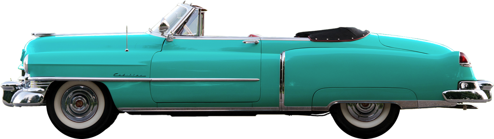

Why you’ll love vacation in Cuba
It always had the allure a forbidden fruit. I love it for its uniqueness, creativity and
survivalist
spirit. I love it
because, despite 60 years of setbacks, it remains an upbeat and open place. Walk down the street with a Cuban
friend
and, within one block, you’ll have received five handshakes, four kisses, three greetings of ‘dime hermano!’
and
at
least two invites into someone’s house. Read more >>
-
1920
Trips
-

271
Venues
-

3,321
Tickets Sold
-

2.912
Reviews
What Cuba is about
Cuba is like a prince in a poor man’s coat; behind the sometimes shabby facades, gold dust
lingers. It’s these rich
dichotomies that make travel here the exciting. Trapped in a time warp and reeling from an economic embargo
that
has
grated for more than half a century, this is a country where you can wave goodbye to everyday assumptions and
expect the
unexpected. Read more >>

Historical Heritage
Bereft of modern interference, Cuba’s colonial cities haven’t changed much since musket-toting pirates
stalked the
Caribbean. Atmosphere and architecture is particularly stirring in Havana, Trinidad and Camagüey where
grandiose squares
and cobbled streets tell erstwhile tales of opulence and intrigue.

Astonishing Beaches
Whether you’re staying in a luxury hotel in Havana or exploring the rural charms of Vinales, in some
ways
it’s all the
real Cuba. Some travellers might opt to miss the beach resort town of Varadero, but this energetic
beachside
paradise
should still be an option to consider as part of your Cuban travel plans.
The Cadillacs of Cuba
Hover for more info

The American trade embargo with Cuba in 1960 had the effect of instantly separating
thousands of 1940s and 1950s
Detroit-built cars from their spare parts supply. Convertibles were always popular, thanks to year-round
tropical
weather. The place for posing with your ride is hard to miss in Havana. The squares around Capitolio, a
flattering copy
of Washington’s Capitol building, are lined with 50-year-old American cars during daylight hours.
Cuba in Photos
When you think of Carribean, you’re probably not thinking of Cuba. It’s the lone acacia
silhouetted against a horizon
stretching into eternity. It’s the snow-capped mountain almost on the equator and within sight of harsh
deserts. It’s
the lush, palm-fringed coastline of the Indian Ocean, it’s the Great Rift Valley that once threatened to
tear the
continent asunder, and it’s the dense forests reminiscent of the continent’s heart. In short, Kenya is a
country of epic
landforms that stir our deepest longings for this very special continent.